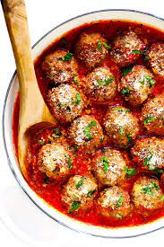

Homemade Meatballs

Homemade Meatballs
To make meatballs you will need:
Ingredients
One (1) pound of ground beef
One (1) white or yellow onionfinely chopped
Two (2) cloves of garlic, minced
Optional:
You can substitute half of the beef for spicy Italian sausage
You can mix in parmesan cheese
Steps
Mix all ingredients together
Chill for one hour or overnight if needed
Form meatballs
Place on cookie sheet or cast iron and cook at 425 until done, approximately 10-15 minutes